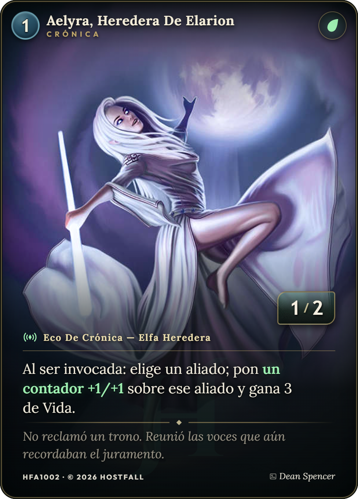
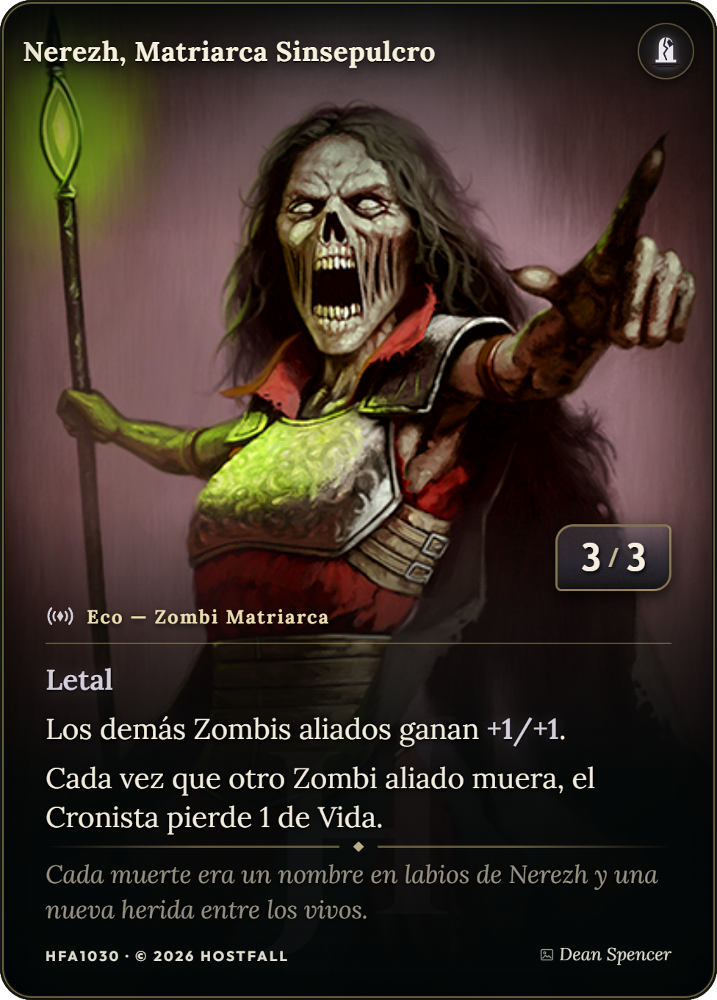

◈ Cronista

39 cartas
El Pacto de Elarion
Reúne a los antiguos aliados de Elarion y abre el camino para el regreso de Vaelor.
Igual que en el menú: la primera pantalla es la actual, reproducida a 1920×1080 con sus valores reales. Las tres siguientes mantienen la cabecera, los dos combatientes, la dificultad y el pie con la acción principal; lo que cambia es qué información se ve, cuánto pesa cada bloque y qué comunica el estado seleccionado.
Los dos mazos son paneles idénticos y espejados, la dificultad es una fila de tres fichas que sólo dicen un nombre, y la consecuencia real de elegir —cuántos turnos tardas en que despierte la Hueste— vive lejos, en una tira dentro del panel contrario. El pie repite las tres decisiones que ya están arriba.

Reúne a los antiguos aliados de Elarion y abre el camino para el regreso de Vaelor.

Nerezh despierta a los muertos sin tumba y convierte los recuerdos de los caídos en nuevas fuerzas.
Elige tu destino
El cambio más pequeño con más efecto: cada dificultad dice qué provoca, no sólo cómo se llama. Al elegir ya sabes que la Hueste despierta antes o después, sin tener que mirar la tira del panel de enfrente. El pie deja de repetir los mazos y sólo confirma lo que no está a la vista.
Reúne a los antiguos aliados de Elarion y abre el camino para el regreso de Vaelor.
Nerezh despierta a los muertos sin tumba y convierte los recuerdos de los caídos en nuevas fuerzas.
Los números (4/3/2 turnos) salen de modes en StartMenu.tsx, así que el texto puede componerse del propio dato en vez de escribirse a mano.
Mismo contenido que B, pero la composición cuenta la historia: tú estás delante y con luz, la Hueste está detrás, fría y más apagada. La línea del centro pasa de ser un adorno con halo a una hendidura de luz que parte la pantalla, y el reloj de despertar se convierte en un medidor de amenaza dentro del panel enemigo.
Reúne a los antiguos aliados de Elarion y abre el camino para el regreso de Vaelor.
Despierta y ataca con todo lo que pueda; no toma decisiones tácticas.
filter frío que se levanta al pasar el ratón. Sigue siendo perfectamente legible; sólo no compite.Ojo con una cosa: hoy los dos paneles comparten componente y estilos. Esta variante obliga a que
expedition-combatant-host tenga tratamiento propio de verdad, no sólo el degradado espejado.
La variante más compacta: en lugar de dos paneles enormes y una sección de dificultad debajo, una sola ficha con una fila por decisión —Crónica, Hueste, Dificultad, Semilla— cada una con su valor elegido y su acción de cambio. Desaparece el hueco central, la pantalla deja de necesitar scroll y añadir una quinta decisión el día de mañana es añadir una fila.
Reúne a los antiguos aliados de Elarion y abre el camino para el regreso de Vaelor.
Nerezh despierta a los muertos sin tumba. No toma decisiones tácticas: revela y ataca.
overflow-y:auto y la dificultad puede quedar por debajo del pliegue; aquí todo cabe en pantalla.Lo que se pierde: la teatralidad del VS y del arte grande. Si la pantalla de preparación es un momento importante del juego —y probablemente lo sea— quizá D sea mejor para una futura pantalla de opciones rápidas que para la principal.
| Paso | Qué se toca | Riesgo |
|---|---|---|
| 1 · Consecuencia (B) | Texto de las fichas de dificultad, un encabezado menos y el resumen del pie. Todo en StartMenu.tsx y unas pocas reglas .expedition-mode. | Ninguno. Hay que añadir tres claves a translations.ts. |
| 2 · Duelo (C) | Rejilla desigual, tratamiento propio del panel de la Hueste, el VS como hendidura y el medidor de amenaza sustituyendo a .expedition-awakening. | Bajo-medio. Conviene comprobar el contraste del panel de la Hueste antes de dejarlo apagado. |
| 3 · Ficha (D) | Reescritura del cuerpo de ExpeditionSetup. Los cajones laterales de cambio de mazo siguen valiendo tal cual. | Medio. Es un cambio de concepto, no de estilo: mejor decidirlo antes de tocar nada. |